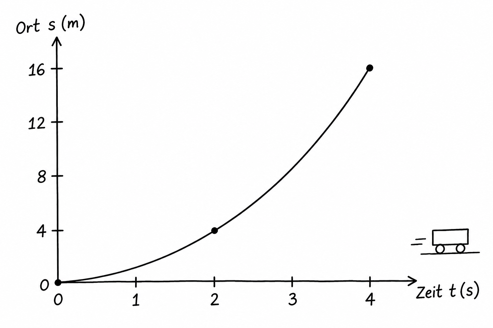
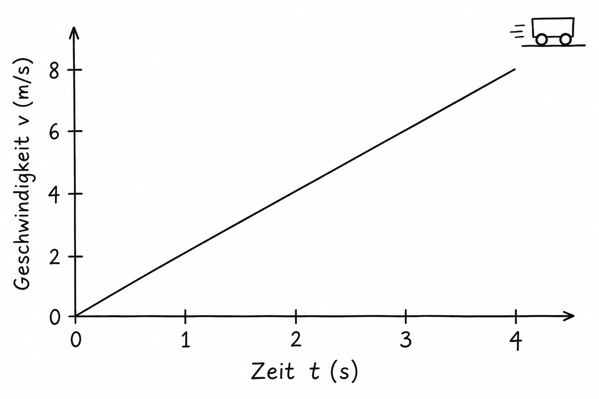
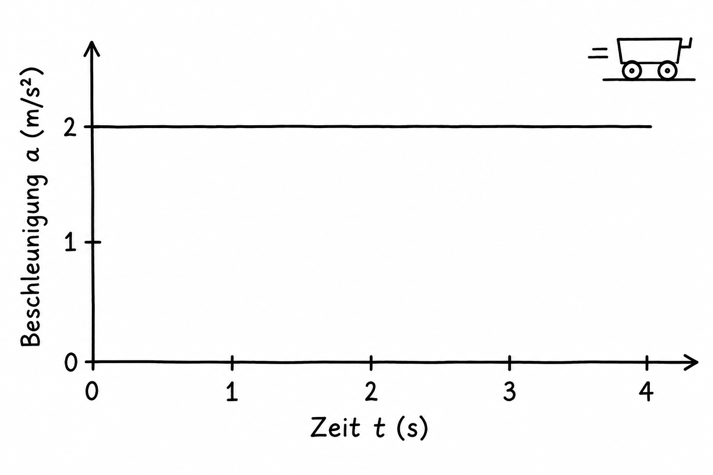

Mechanik · Bewegungen
Die gleichmäßig beschleunigte Bewegung
Die Geschwindigkeit ändert sich in jeder Sekunde um denselben Betrag.
Gleichmäßig beschleunigt bedeutet: Die Beschleunigung bleibt konstant. In unserem Beispiel fährt ein Wagen geradeaus und wird immer schneller. In gleichen Zeitspannen nimmt seine Geschwindigkeit gleich stark zu. Der zurückgelegte Weg wächst dagegen in jeder weiteren Sekunde stärker.
1. Ort-Zeit-Diagramm: s(t)
Die waagerechte Achse zeigt die Zeit t in Sekunden, die senkrechte den Ort s in Metern. Der Graph ist gekrümmt und wird immer steiler. Seine Steigung zeigt die Geschwindigkeit: Je steiler der Graph, desto schneller fährt der Wagen. Weil er bei s = 0 m aus dem Stand startet, gilt hier s(t) = ½ · a · t² = 1 m/s² · t².

2. Geschwindigkeit-Zeit-Diagramm: v(t)
Die senkrechte Achse zeigt die Geschwindigkeit v in Metern pro Sekunde. Die Gerade steigt: In jeder Sekunde kommen 2 m/s dazu. Ihre Steigung ist die Beschleunigung. Hier gilt v(t) = a · t = 2 m/s² · t. Die Fläche unter der Geraden bis 4 s ist ein Dreieck. Sie entspricht dem zurückgelegten Weg: ½ · 4 s · 8 m/s = 16 m.

3. Beschleunigung-Zeit-Diagramm: a(t)
Die senkrechte Achse zeigt die Beschleunigung a in Metern pro Sekunde zum Quadrat. Die Linie bleibt waagerecht bei 2 m/s². Das heißt: Die Geschwindigkeit nimmt jede Sekunde um 2 m/s zu. Die Fläche unter der Linie bis 4 s zeigt die Änderung der Geschwindigkeit: 2 m/s² · 4 s = 8 m/s.
